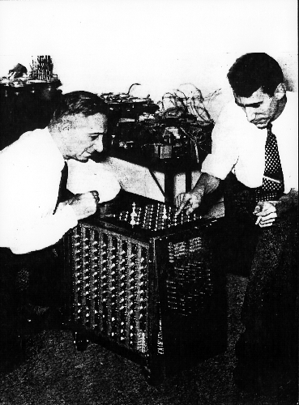

So Where Did This All Start?
Video Games didn't start as the complicated things we see today. In fact they were very simple!
1940

For the Westinghouse display at the World's Fair, Edward U. Condon designs a computer that plays the traditional game Nim in which players try to avoid picking up the last matchstick. Tens of thousands of people play it, and the computer wins at least 90% of the games.
1947
Thomas T. Goldsmith Jr. and Estle Ray Mann file a patent for a "cathode ray tube amusement device." Their game, which uses a cathode ray tube hooked to an oscilloscope display, challenges players to fire a gun at a target.
1950
For the Westinghouse display at the World's Fair, Edward U. Condon designs a computer that plays the traditional game Nim in which players try to avoid picking up the last matchstick. Tens of thousands of people play it, and the computer wins at least 90% of the games.
1952
A. S. Douglass creates OXO (a game known as noughts and crosses in the United Kingdom and tic-tac-toe in the United States) on Cambridge's EDSAC computer as part of his research on human-computer interactions.
1954

Programmers at New Mexico's Los Alamos laboratories, the birthplace of the atomic bomb, develop the first blackjack program on an IBM-701 computer.
1972
Nolan Bushnell and Al Alcorn of Atari develop an arcade table tennis game. When they test it in Andy Capps Tavern in Sunnyvale, California, it stops working. Why? Because people played it so much it jammed with quarters. Pong, an arcade legend, is born.
1977
Atari releases the Video Computer System, more commonly known as Atari 2600. Featuring a joystick, interchangeable cartridges, games in color, and switches for selecting games and setting difficulty levels, it makes millions of Americans home video game players.
1980

A missing slice of pizza inspires Namco’s Toru Iwatani to create Pac-Man, which goes on sale in July 1980. That year a version of Pac-Man for Atari 2600 becomes the first arcade hit to appear on a home console. Two years later, Ms. Pac-Man strikes a blow for gender equality by becoming the best-selling arcade game of all time.
1981
Video game fans go ape over Nintendo’s Donkey Kong, featuring a character that would become world-famous: Jumpman. Never heard of him? That’s because he’s better known as Mario—the name he took when his creator, Shigeru Miyamoto, makes him the star of a later game by Nintendo.
1984
Russian mathematician Alexey Pajitnov creates Tetris, a simple but addictive puzzle game. The game leaks out from behind the Iron Curtain, and four years later, Nintendo bundles it with every new Game Boy.
1985

The Nintendo Entertainment System (NES) revives an ailing United States video game industry two years after the Nintendo Corporation released it in Japan as Famicom.
1987

It's a good year for fantasy Role Playing Games, as Shigeru Miyamoto creates Legend of Zelda, SSI wins the video game license for Dungeons and Dragons, and Sierra's Leisure Suit Larry gives players a different kind of adult role playing game.
1989

Nintendo's Game Boy popularizes handheld gaming. Game Boy is not the first handheld system with interchangeable cartridges—Milton Bradley introduced Microvision 10 years earlier—but it charms users with its good game play, ease of use, and long battery life.
1990

Microsoft bundles a video game version of the classic card game solitaire with Windows 3.0. Millions of users who would not normally pick up a game console find they enjoy playing computer games. Solitaire becomes one of the most popular electronic games ever and provides a gaming model for quick, easy-to-play, casual games like Bejeweled.
1991

Sega needs an iconic hero for its Genesis (known as Mega Drive in Japan) system and finds it in Sonic the Hedgehog. Gamers, especially in the United States, snap up Sega systems and love the little blue guy's blazing speed and edgy attitude.
1994

Blizzard releases Warcraft: Orcs and Humans, a real-time strategy game that introduces millions of players to the legendary world of Azeroth.
1995
Sony releases PlayStation in the United States, selling for $100 less than Sega Saturn. The lower price point, along with the arrival of Nintendo 64 in 1996, weakens Sega's home console business. When Sony PlayStation 2 debuts in 2000, it becomes the dominant home console and Sega exits the home console business.
1998

Legend of Zelda: Ocarina of Time transports players to the richly imagined world of Hyrule, full of engaging characters, thought-provoking puzzles, and the most memorable musical instrument to ever appear in a video game.
2001
Microsoft enters the video game market with Xbox and hit games like Halo: Combat Evolved. Four years later, Xbox 360 gains millions of fans with its advanced graphics and seamless online play.
2003

Valve energizes PC gaming with its release of Steam. The digital distribution platform allows players to download, play, and update games.
2004

Nintendo maintains its dominance of the handheld market with the Nintendo DS, an easy-to-use, portable gaming system packed with two processors, two screens, multiplayer capabilities, and a stylus for the touchscreen. Great games like Super Mario Kart DS helped too.
2005
Microsoft's Xbox 360 brings high-definition realism to the game market, as well as even better multiplayer competitions on Xbox Live and popular titles such as Alan Wake.
2006

Nintendo Wii gets gamers off the couch and moving with innovative, motion-sensitive remotes. Not only does Nintendo make gaming more active, it also appeals to millions of people who never before liked video games.
2008

More than 10 million worldwide subscribers make World of Warcraft the most popular massively multiplayer online (MMO) game. MMOs create entire virtual universes for players and redefine how we play, learn, and relate to each other.
2010
The indie game movement comes of age with the tremendous popularity of Minecraft, the addictive brick-building game from Swedish developer Markus Persson.
2014

League of Legends (abbreviated LoL) is a multiplayer online battle arena video game developed and published by Riot Games for Microsoft Windows and macOS. The game follows a freemium model and is supported by microtransactions, and was inspired by the Warcraft III: The Frozen Throne mod, Defense of the Ancients